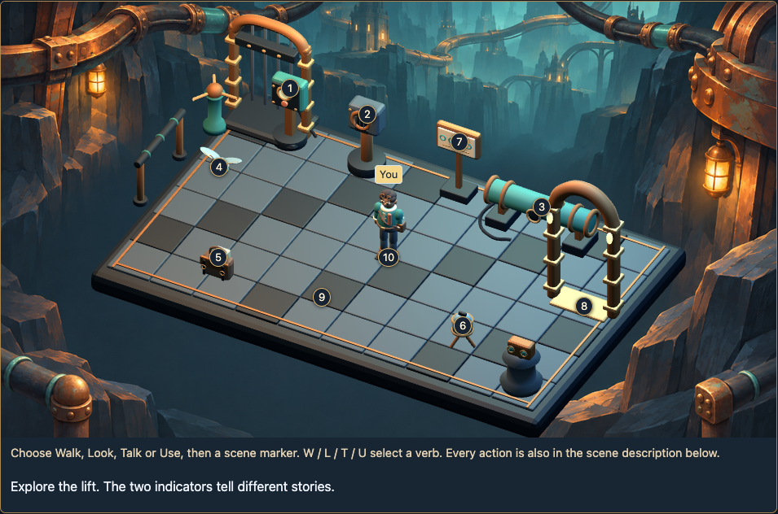

Network Quest · R01 · T067 review packet
The earlier representative candidate for the Physical Layer adventure: the apprentice, Photon, a silent link and the first investigation. The owner reviewed its visuals positively and requested one contained adventure screen with contextual controls. That interface revision and final acceptance remain pending.
Choose New Adventure. The preview runs on this Mac and keeps guest progress in the current tab. The review server must remain running for this link.

Twelve Firefox samples used both specified desktop viewports with a calibrated 20 Mb/s local response scheduler and 50 ms response delay. This emulates downstream transfer and response delay; it does not establish production-host performance. Native Safari performance remains unverified because the automated controls could not obtain a usable foreground surface.
Owner review: interface revision requested. The 2026-11-26 response was positive about the visuals and asked for a Sierra-style game frame instead of the text buttons below the playable window. The measurements above describe this earlier frozen candidate. The revised interface needs its own checks and final owner review. The existing speaker/earbud approval remains valid for unchanged audio clips. G3 and episode acceptance remain pending.